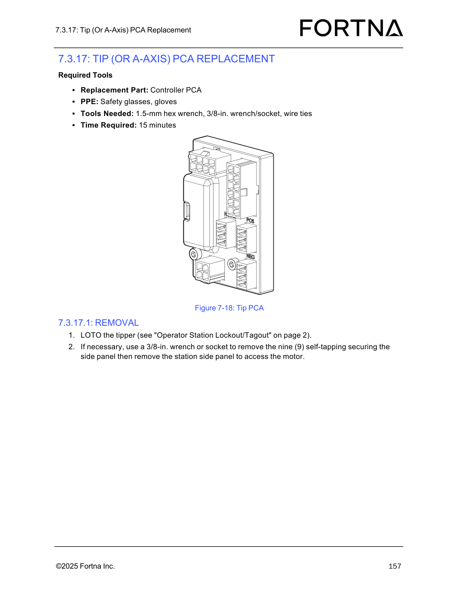

| Procedure ID | proc_replace_flat_flex_cable_at_the_a_axis_pca_v1 |
|---|---|
| Title | Replace Flat-Flex Cable (FFC) At The A-Axis PCA |
| Procedure Type | recovery |
| Primary Role | L2_support |
| Support Safe | No |
| Validation Status | needs_sme_review |
| Merge Status | source_finalized |
Remove the existing flat-flex cable and install the replacement FFC at the A-axis PCA using the documented lockout, access, clamp removal, cable replacement, and clamp reinstallation steps from the source manual.
Use this procedure when the flat-flex cable at the A-axis PCA must be replaced on the tipper, as documented in the OptiSweep Operation and Maintenance Manual.
Responsible role: L2_support
Instruction:
LOTO the tipper using the referenced Operator Station Lockout/Tagout procedure before starting the flat-flex cable replacement.
Expected result:
The tipper is locked out and tagged out in accordance with the referenced procedure.
Stop or Escalate If:
Responsible role: L2_support
Instruction:
Gather the replacement flat-flex cable, safety glasses, gloves, 3/8-in. wrench or socket, 4-mm hex wrench, 6-mm hex wrench, tool to cut wire ties, and wire ties.
Expected result:
All documented parts, PPE, and tools are available at the work area.
Stop or Escalate If:
Responsible role: L2_support
Instruction:
If necessary, use a 3/8-in. wrench or socket to remove the nine self-tapping screws securing the side panel, then remove the station side panel to access the motor.
Expected result:
The station side panel is removed when needed and access to the internal area is available.
Screens / Images:

Stop or Escalate If:
Responsible role: L2_support
Instruction:
Starting at the A-axis PCA, remove the four M3 socket-head screws holding the two FFC clamps and unplug the old FFC.
Expected result:
The two FFC clamps are removed and the old flat-flex cable is unplugged from the A-axis PCA.
Screens / Images:

Stop or Escalate If:
Responsible role: L2_support
Instruction:
Plug in the new FFC and reinstall the FFC clamps using the M3 socket-head screws.
Expected result:
The new flat-flex cable is installed at the A-axis PCA and the FFC clamps are reinstalled with the M3 socket-head screws.
Screens / Images:
Stop or Escalate If: